אלה רוזנטל
פיזיותרפיסטית נוירו-התפתחותית · גישת גוף-נפש
תינוקות · ילדים בשיקום · רצפת אגן ילדים · הדרכת הורים
קליניקה ברחובות
במהלך הטיפול של בני אצל אלה, גיליתי לא רק את הפן המקצועי שלה והאבחון החד של הבעיות והקשיים. גיליתי גם את הגישה המדהימה שלה לילדים והיכולת שלה ליצור קשר ולהתחבר לילד. היא הייתה בקשב תמידי לרצונות שלו והפכה את הטיפול למיוחד ומהנה. כל דקה במהלך טיפול אצל אלה מכוונת מטרה, אבל הכל נעשה בגמישות ותוך שינוי מתמיד בהתאם למצב. והכל נעשה תוך תקשורת גלויה מולי, תוך כדי הסבר והחלטות משותפות לגבי התכנית. זכינו להכיר את אלה ולהיות מטופלים אצלה!
יעל, רחובות · MedReviewsבתי מאובחנת עם עיכוב התפתחותי ומטופלת אצל אלה בהנאה גדולה מזה 9 חודשים. הגענו אחרי חוויות לא מוצלחות אצל מספר אנשי מקצוע, ומייד הרגשנו בהבדל!! מפגישה לפגישה אלה הצליחה ליצור התקדמות מדהימה… לקריאת ההמלצה המלאה
אמא, MedReviewsממליצים בחום על אלה רוזנטל, הגענו לאלה כשהיינו צריכים ליווי מקצועי, וקיבלנו מעטפת שלמה. אשת מקצוע מיומנת מאוד, יסודית וקשובה. הגישה שלה לילדים פשוט קסומה – היא מצליחה להפוך כל תרגיל לחוויה חיובית ומעצימה. אלה רגישה, נעימה ומשרה ביטחון רב גם על הילדים וגם עלינו כהורים. מעבר לידע המקצועי הרחב שלה, מה שבאמת מייחד אותה זו הרגישות יוצאת הדופן והיכולת לקרוא את הבן שלנו בכל רגע נתון. היא יודעת מתי לדחוף ומתי להכיל, ותמיד בחיוך ובמאור פנים. פיזיותרפיסטית מדהימה, אלה מומלצת בחום! 🙏
MedReviewsהגענו לאלה כשהבן שלי היה בן 7 חודשים בעקבות טונוס מוגבר. כבר מהמפגש הראשון הבנתי שהגעתי למקום הנכון. הגישה של אלה כל כך רכה, נעימה, קשובה וזורמת עם הילד. הוא לא מתחבר לזרים, אבל אלה פשוט ריככה אותו, והייתי בהלם איך הוא משתף פעולה ומשחק איתה בהנאה! השיפור ניכר כבר מהמפגש הראשון.
ליאורהגענו עם תינוקת פיצקית בת חודש והמון חששות בלב, וכבר במפגש הראשון קיבלנו תמיכה ועידוד ויצאנו עם המון כלים הביתה. אלה ליוותה אותנו במשך חודשים ותמיד עם חיוך, המון אהבה לקטנה לצד מקצועיות חסרת פשרות.
תאיראלה ליוותה את הבת שלי מגיל 9 חודשים עם המון סבלנות, רגישות ואכפתיות אמיתית… היום, בגיל שנה ו־8 חודשים, היא הולכת, מטפסת על סולמות ופורחת.
נטעהיינו אצל אלה עם בן שנה וחצי שבמשך חודש דישדש בהליכה… מהרגע שיצאנו מהמפגש הוא באמת התחיל ללכת, ותוך יומיים התחיל להעדיף הליכה על זחילה.
יעלהגעתי עם תינוק בן שלושה חודשים וחצי שלא שכב על הבטן יותר משתי דקות. תוך כמה ימים הוא כבר שכב על הבטן 20–30 דקות ושיחק בהנאה.
עדיההבנה של אלה היא לא רק של הפן המוטורי, אלא התפתחותית ורחבה. היא נתנה לנו כלים שעזרו מאוד, והכל באווירה נעימה ומשחקית.
מאיה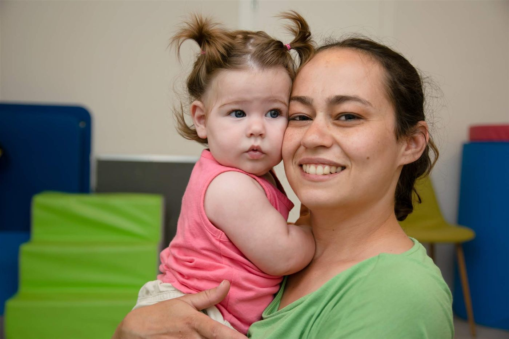
אודותיי
אני אלה רוזנטל, פיזיותרפיסטית נוירו-התפתחותית עם 15 שנות ניסיון, מומחית בהתפתחות התינוק, בשיקום ילדים ובטיפול ברצפת אגן ילדים, עם גישה הוליסטית של גוף ונפש.
15 שנות ניסיון במכון להתפתחות הילד, במעון ובגן שיקומי ובמרפאה להפרעות תנועה בילדים. מדריכה סטודנטים, פיזיותרפיסטים וצוותי גן.
בוגרת לימודי הנחיית הורים, טיפול גוף-נפש בילדים והתמקדות, וקורס רצפת אגן בילדים.

הסיפור שלי
אני אמא לשלושה ילדים, נשואה, חיה את הבלגן של כולם ומתמודדת עם ריבוי משימות ואתגרים. לשמחתי, המקצוע שלי נותן לי עוגן וכוח.
מאז שסיימתי את לימודי הפיזיותרפיה ב-2011 עבדתי במכון להתפתחות הילד, במעון שיקומי, בגן שיקומי ובמרפאה להפרעות תנועה בילדים, ובמקביל בקליניקה הפרטית שלי ברחובות.
עם השנים הבנתי שאי אפשר להפריד גוף מנפש. לכן למדתי שלוש שנים הדרכת הורים, התמקדות (Focusing), ותוכנית לטיפול אינטגרטיבי בילדים ונוער מבוסס גוף-נפש. אני רואה בחדר הטיפולים מרחב בטוח לילד לרכוש מיומנויות ואסטרטגיות חדשות, ומרחב בטוח להורה להסתכל על ילדו ולהבין את עולמו.
בטיפולים אני משלבת הרבה משחק, יצירתיות וסבלנות, ומקפידה שההורים ייצאו עם כלים מעשיים לבית, כי שם קורה רוב השינוי.
הגישה שלי
גוף ונפש
בגישת הגוף-נפש אני מתייחסת לקשר בין תחושות הגוף והרגש לתנועה: מתח, חשש, מוסחות, קשב ועוד משפיעים על האופן שבו הילד זז, ותנועה ונשימה משפיעות בחזרה על תחושת הרוגע והביטחון שלו. בעזרת כלים מתוך לימודי גוף-נפש, התמקדות (Focusing) ומיינדפולנס, הילד לומד לזהות תחושות בגוף, להבין מה הוא צריך ולהקשיב לעצמו. כשהטיפול נחווה כחוויה חיובית, נוצרת מוטיבציה פנימית, והשינוי נשמר גם מחוץ לקליניקה.
התגייסות הילד והמשפחה
מטרות הטיפול נקבעות עם ההורים, וכשאפשר גם עם הילד. ההורים הם השותפים המרכזיים שלי בתהליך: הם מכירים את הילד הכי טוב ונמצאים איתו רוב הזמן. לכן בכל מפגש אני מסבירה ומדגימה מה אנחנו עושים ולמה, כדי שההורים ירגישו בטוחים להמשיך בבית. אני שואפת שהתרגול ישתלב בשגרה הביתית, במשחק, ברחצה, בהלבשה או ביציאה לגינה, ולא יתווסף אליה כמשימה נוספת. כשהילד שותף לבחירת הפעילות ומבין את מטרתה, הוא לוקח חלק פעיל בתהליך ולא רק מקבל טיפול.
ראייה רב-תחומית
לאורך השנים אני עובדת בצמוד למרפאות בעיסוק, לקלינאיות תקשורת ולמטפלות רגשיות, ולומדת מהן הרבה. אני מאמינה שכל מטפל בילדים הוא קודם כל מטפל התפתחותי, ומנקודת המבט הרחבה הזו אני מתבוננת ביכולות ובכוחות של הילד. בהתאם לכך אני עובדת בתיאום עם הצוות הפרא-רפואי ועם המסגרת החינוכית, ומתאימה ציוד שיקומי לפי הצורך. המטרה: השתתפות פעילה ועצמאות בבית, בגן ובבית הספר.
מקום להורות
ההורים הם הסביבה הכי משמעותית לילד, ובתקופות מסוימות עולות שאלות, חששות ולפעמים גם עומס. מתוך לימודי הנחיית הורים, אני נותנת מקום לחוויה ההורית, ויחדיו אנו מוצאים את הדרכים שתומכות בהתפתחותו של הילד ומחזקות את הביטחון שלכם כהורים.
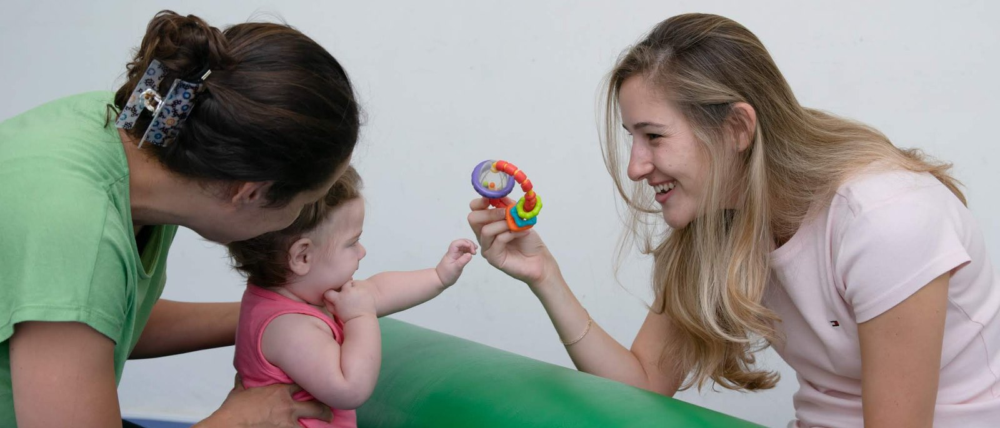
במה אני יכולה לעזור?
טיפול וליווי בתינוקות, בפעוטות ובילדים, מהשבועות הראשונים לחיים ועד גיל בית הספר.
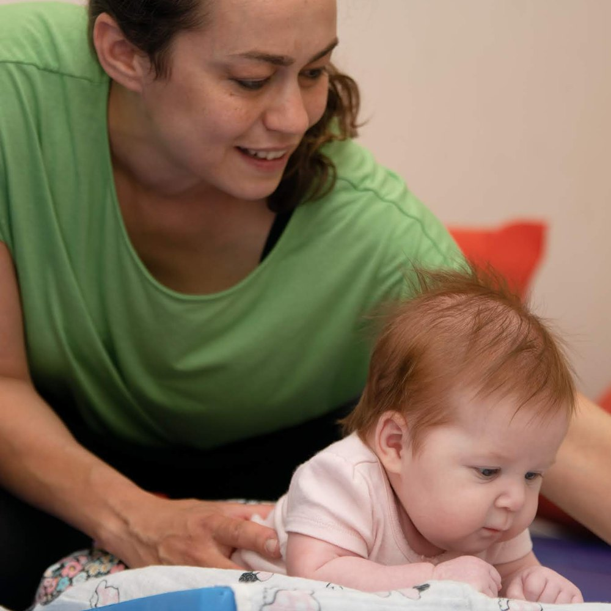
תינוקות
העדפת צד או טורטיקוליס? קושי בשכיבה על הבטן, בהתהפכות, בזחילה או בהליכה?
מידע נוסף ←
ילדים בשיקום
שיתוק מוחין (CP), תסמונות ועיכוב התפתחותי משמעותי. טיפול שמעודד השתתפות ועצמאות.
מידע נוסף ←
יציבה וסרבול מוטורי
ילדים מסורבלים, עם קושי ביציבה, בשיווי משקל ובקואורדינציה. גם כשהמטרות התפקודיות שייכות לקלינאית התקשורת או למרפאה בעיסוק, היציבה דורשת לעיתים התערבות פיזיותרפית שתומכת בטיפול שלהן.
מידע נוסף ←
רצפת אגן ילדים
הרטבת יום או לילה, עצירות, דליפת צואה, גמילה שלא מתקדמת.
מידע נוסף ←התפתחות התינוק

טורטיקוליס והעדפת צד
הטיית ראש או סיבוב לצד אחד בלבד. טיפול מוקדם עם תרגילים פשוטים לבית מביא לשיפור מהיר.
 צילום: Gzzz, CC BY-SA 4.0 (נחתך)
צילום: Gzzz, CC BY-SA 4.0 (נחתך)
השטחת ראש (פלגיוצפלי)
הדרכה על מנחים, זמן בטן ומשחק, ומעקב שיעזור לראש להתעגל.

עיכוב באבני דרך
קושי בהרמת ראש, בהתהפכות, בישיבה, בזחילה, בעמידה ובהליכה.

ליווי פגים
מעקב התפתחותי וטיפול מותאם לגיל המתוקן, כולל הדרכה להורים מהיום הראשון בבית.
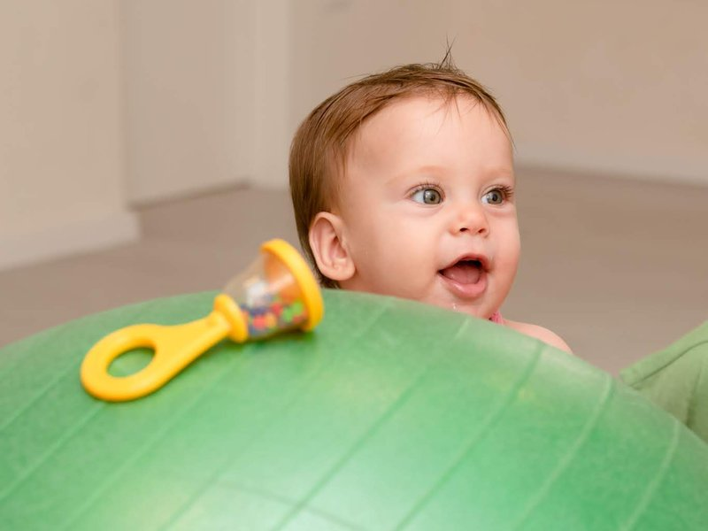
טונוס שרירים
טונוס נמוך (היפוטוניה), טונוס גבוה או גמישות יתר במפרקים.

מנח רגליים והליכה
הליכה על קצות האצבעות, רגליים שטוחות וחוסר יציבות בהליכה.
יציבה, קואורדינציה וקשיים מוטוריים
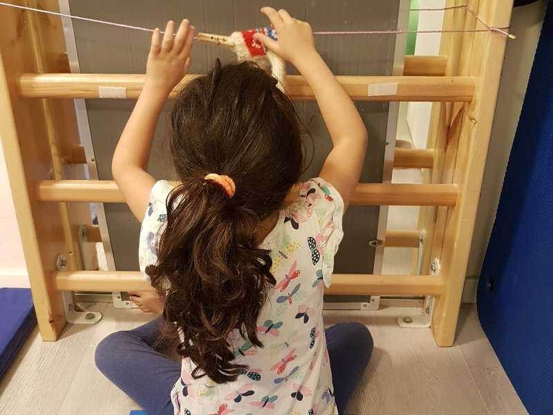
יציבה
קושי לשמור על יציבה בישיבה ובעמידה, עייפות מהירה ונטייה להישען. לעיתים נדרשת התערבות פיזיותרפית שתומכת גם בטיפול אצל קלינאית התקשורת או המרפאה בעיסוק.
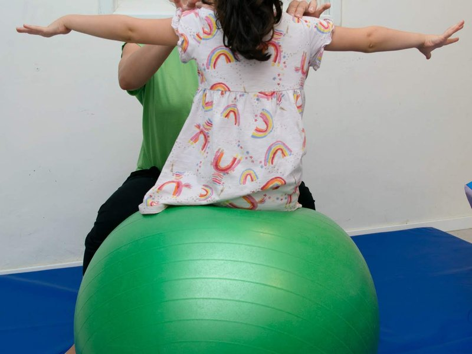
קואורדינציה ושיווי משקל
ילדים מסורבלים, שנופלים הרבה או נמנעים מפעילות בגן ובחצר.

DCD וקשיים מוטוריים
קושי ברכישת מיומנויות כמו קפיצה, ריצה, רכיבה על אופניים ותפיסת כדור.
שיקום ילדים

שיקום לאחר ניתוח
חזרה הדרגתית ובטוחה לתנועה ולתפקוד לאחר ניתוח או פציעה, בתיאום עם הצוות המטפל.

תסמונות שונות
ליווי ארוך טווח לילדים עם תסמונות גנטיות ועיכוב התפתחותי משמעותי, עם דגש על השתתפות ועצמאות.

שיתוק מוחין (CP)
טיפול בגישה נוירו-התפתחותית לשיפור השליטה המוטורית, היציבה והניידות, בהתאם למטרות התפקודיות של הילד והמשפחה.

התאמת ציוד וסביבה התפתחותית
התאמת ציוד שיקומי והתאמת הסביבה בבית ובמסגרת החינוכית, כך שהילד יוכל להשתתף באופן פעיל ככל האפשר.
הרטבה, דחיפות ועצירות
הקשיים בשליטה על סוגרים קשורים להיבטים פיזיולוגיים, תחושתיים, מוטוריים, וכמובן גם רגשיים והתנהגותיים. בטיפול הילד והמשפחה לומדים אסטרטגיות להתמודדות, מתוך הבנה של הקשיים הספציפיים של כל ילד.
- הרטבה ביום ובלילה (אנורזיס)
- עצירות ובריחת צואה (אנקופרזיס)
- דחיפות ותכיפות במתן שתן
- הרגלי התרוקנות נכונים, תרגול שרירי רצפת האגן ונשימה
- שיפור הקשב לתחושות הגוף, בשילוב מיינדפולנס
הילד שותף מלא: יחד אנחנו קובעים מטרות קטנות וברורות, והטיפול מלווה בהדרכת הורים פרונטלית או אונליין. הטיפול בילדים שונה לגמרי מטיפול רצפת אגן במבוגרים ואינו חודרני.
קבוצות ליווי התפתחותי לתינוקות
קבוצה קטנה ואינטימית של אמהות ותינוקות בקליניקה, שבה כל תינוק מקבל מענה מקצועי וכל אמא מקבלת מקום לשאלות. אפשר גם לארגן מפגש פרטי בבית עם חברה או שתיים.


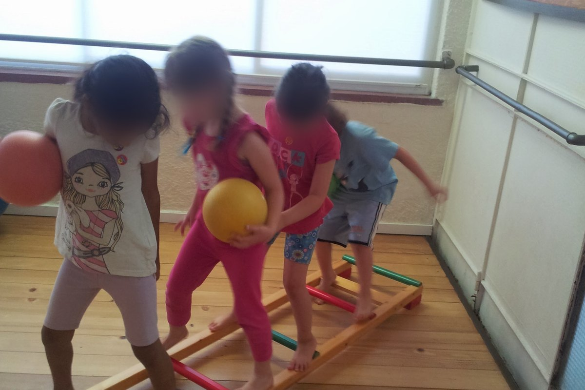
קבוצות וסדנאות
- קבוצות יציבה לילדים: קבוצה קטנה לחיזוק שרירי ליבה, שיווי משקל וקואורדינציה.
- סדנאות לאמהות ותינוקות: מפגשים בקבוצה קטנה על התפתחות התינוק בחודשים הראשונים.
בקליניקה ברחובות
הטיפולים מתקיימים בקליניקה מאובזרת ונעימה ברחובות. בקליניקה יש גם מטבח, שבו אפשר לתרגל מיומנויות יומיומיות בסביבה טבעית, פינת המתנה נוחה להורים וחדר נפרד להדרכת הורים, ללא נוכחות הילד. לעיתים אני מגיעה גם לביקור בית, למשל להתאמת סביבה וציוד. בנוסף אני מעבירה סדנאות והדרכות הורים אונליין.
- מפגש של 50 דקות
- תרגילים לבית וקשר רציף בין המפגשים
- קבלה לצורך החזר מביטוח פרטי

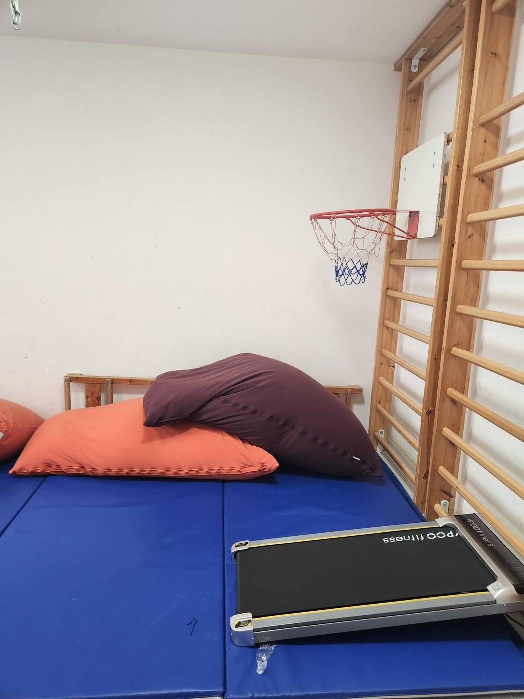
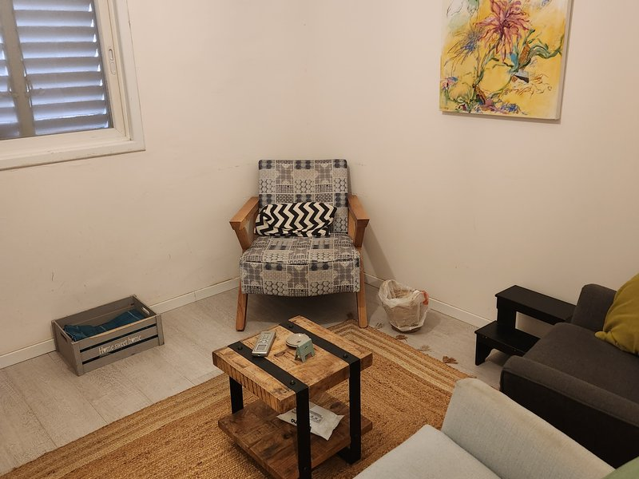
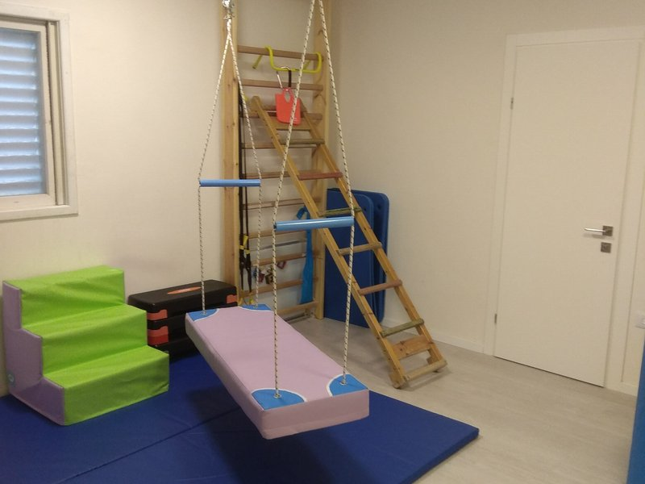


מה ההורים מספרים
המלצות שהורים כתבו בעמוד הפייסבוק וב-MedReviews (5.0 ★). שמות הילדים ותמונות הפרופיל טושטשו כדי לשמור על פרטיותם. לחיצה על צילום מסך מגדילה אותו.

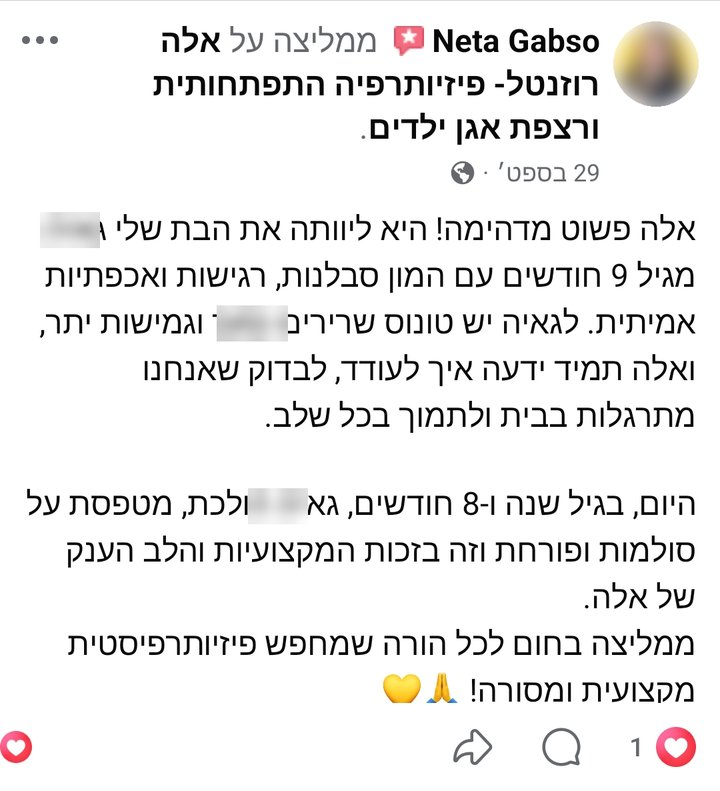
במהלך הטיפול של בני אצל אלה, גיליתי לא רק את הפן המקצועי שלה והאבחון החד של הבעיות והקשיים. גיליתי גם את הגישה המדהימה שלה לילדים והיכולת שלה ליצור קשר ולהתחבר לילד. היא הייתה בקשב תמידי לרצונות שלו והפכה את הטיפול למיוחד ומהנה. כל דקה במהלך טיפול אצל אלה מכוונת מטרה, אבל הכל נעשה בגמישות ותוך שינוי מתמיד בהתאם למצב. והכל נעשה תוך תקשורת גלויה מולי, תוך כדי הסבר והחלטות משותפות לגבי התכנית. זכינו להכיר את אלה ולהיות מטופלים אצלה!
יעל, רחובות

וואו. ממה להתחיל :) ? בתי בת שנה ו-7 חודשים מאובחנת עם עיכוב התפתחותי ומטופלת אצל אלה בהנאה גדולה מזה 9 חודשים. הגענו לאלה לאבחנה וייעוץ לאחר חוויות לא מוצלחות אצל מספר אנשי מקצוע. מייד הרגשנו בהבדל!! ברגישות ובמקצועיות ממעלה ראשונה, אלה יצרה לאט ובבטחון יחסי אמון עם בתי ואיתנו (הוריה), שמה דגש על ללמוד את בתי, ללמוד להבין אותה, מה הרצונות שלה ומה הגורמים המוטיבציוניים שלה. כבר מההיכרות הראשונית היה ניתן להבחין בשיתוף פעולה מצד הבת שלי ובכך שהרגישה בנוח עם אלה, מה שלא מובן מאליו לפעוטה בגילה. מפגישה לפגישה אלה הצליחה ליצור התקדמות מדהימה עם הבת שלי, היחידה שהצליחה להבין אותה וליצור איתה הצלחה רצופה ומשמעותית לאורך זמן. אלה חמה, נעימה, רגישה ומקצועית שאין לתאר. בנוסף הקליניקה מאובזרת בכל הציוד הנדרש ומאפשרת לבצע טיפול מגוון, מעניין ומקצועי. ממליצים מכל הלב על אלה המדהימה. מי שיטופל אצלה - יזכה ובענק :)!
אמא
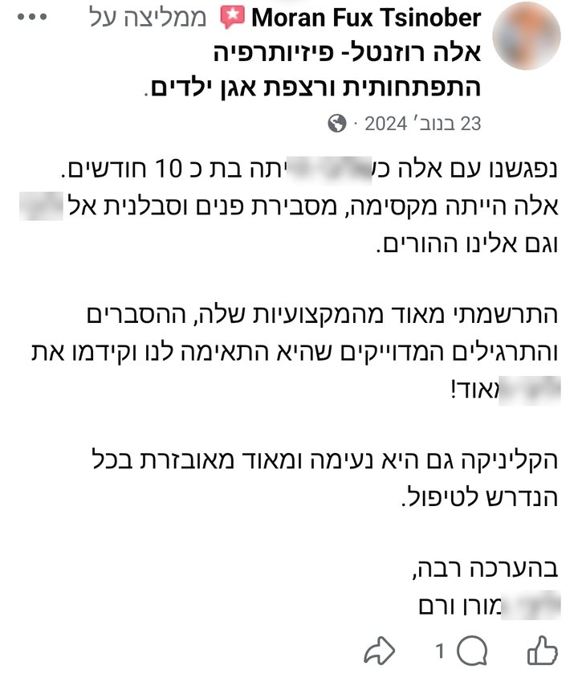

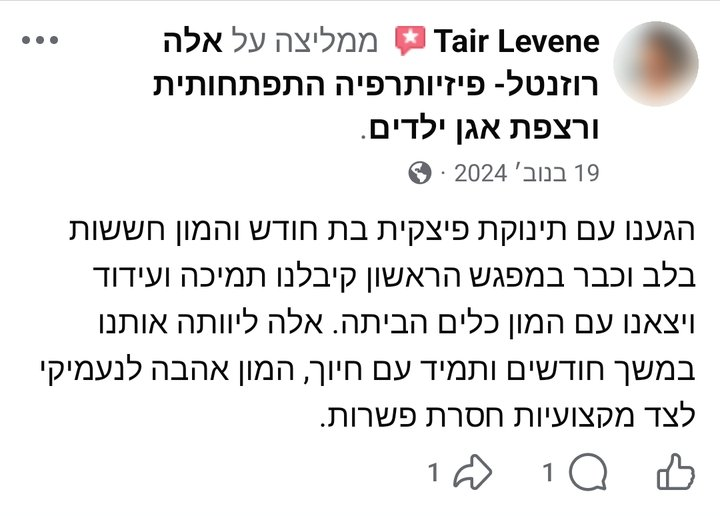
אלה רוזנטל מקצועית ומהממת.. עזרה לי רבות עם הקטן שלי.. גישה מדהימה לילדים, מלאת הקשבה, יצירתיות ואכפתיות.. אנחנו מגיעים לא מעט על פני תקופה ארוכה והמתוק מתקדם יפה, וגם אני נרגעת ושמחה :)
סתיו, נס ציונה

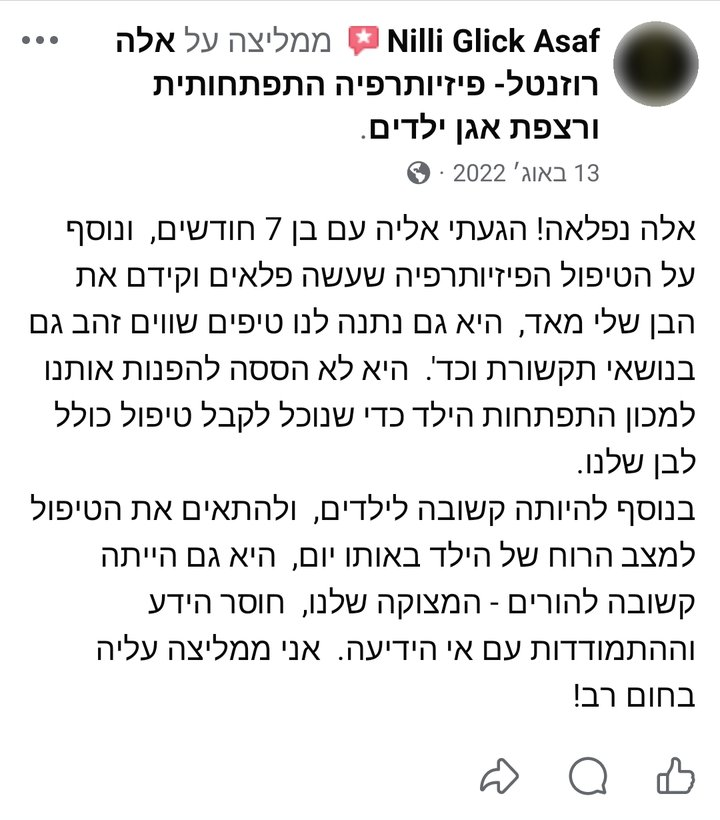
ממליצים בחום על אלה רוזנטל, הגענו לאלה כשהיינו צריכים ליווי מקצועי, וקיבלנו מעטפת שלמה. אשת מקצוע מיומנת מאוד, יסודית וקשובה. הגישה שלה לילדים פשוט קסומה – היא מצליחה להפוך כל תרגיל לחוויה חיובית ומעצימה. אלה רגישה, נעימה ומשרה ביטחון רב גם על הילדים וגם עלינו כהורים. מעבר לידע המקצועי הרחב שלה, מה שבאמת מייחד אותה זו הרגישות יוצאת הדופן והיכולת לקרוא את הבן שלנו בכל רגע נתון. היא יודעת מתי לדחוף ומתי להכיל, ותמיד בחיוך ובמאור פנים. פיזיותרפיסטית מדהימה, אלה מומלצת בחום! 🙏
הורים

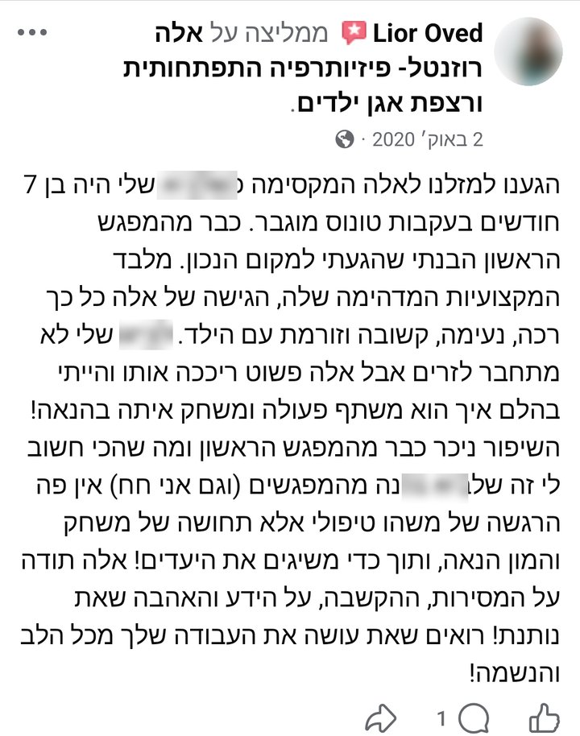

הגעתי עם הבת שלי בגיל 5 חודשים עם גמישות יתר, טונוס נמוך וטורטיקוליס. מיידית שתינו התאהבנו באלה: מקצועית, אמפטית ומדהימה עם ילדים. כל פעם שהגענו למפגש ידענו שאנחנו בידיים טובות, והתוצאות מדברות בעד עצמן.
אמא

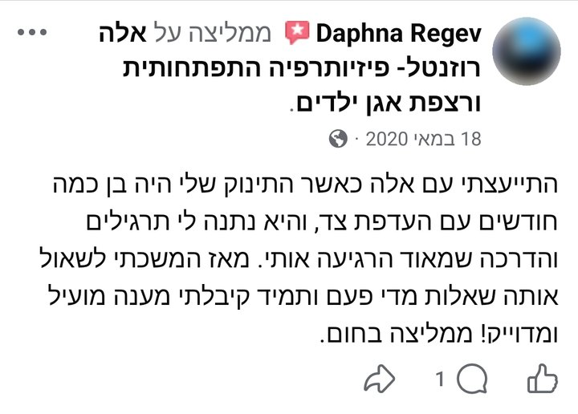

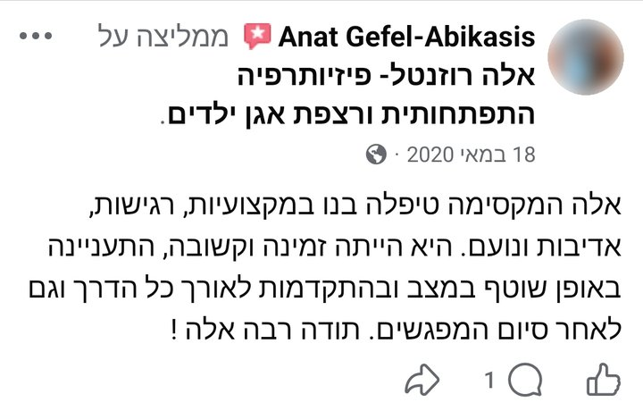


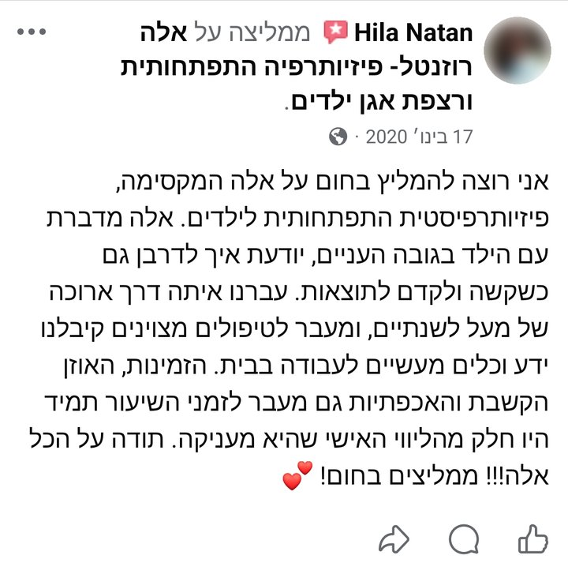
המפגש אצל אלה זה באמת מעגל תמיכה קטן ונפלא. הקבוצה הקטנה בקליניקה המהממת נותנת מענה מקצועי לתינוק ורגשי לאמאות. אלה נותנת במה לכולן, אין שיפוטיות, והיא מאוד קשובה לצרכי התינוקות.
משתתפת בקבוצת ליווי התפתחותי


טופלתם אצלי? אשמח לשמוע
כתבו כמה מילים על החוויה שלכם. ההמלצה תגיע אליי, ואחרי שאקרא אותה אוסיף אותה לאתר.
אפשר גם להשאיר המלצה בעמוד הפייסבוק.
ידע קטן, הבדל גדול
רעיונות פשוטים שאפשר לשלב בשגרת היום. הם לא מחליפים ייעוץ אישי, ואם משהו מטריד אתכם, אשמח שתתייעצו איתי.
איך לעודד שכיבה על הבטן?
שכיבה על הבטן היא אחת התנוחות החשובות ביותר להתפתחות התינוק. דרכה הוא מתחזק כדי לרכוש את אבני הדרך הבאות: קשר עין ומעקב, הרמת ראש, זחילה, הליכה ואפילו אכילה. משרד הבריאות ממליץ לשכב על הגב בזמן השינה, ובערות לאפשר מגוון תנוחות, ובמיוחד שכיבה על הבטן.
- מתחילים קצר: כמה פעמים ביום, לפרקי זמן קצרים. הזמן יתארך מעצמו ככל שהתינוק יתחזק.
- על הירכיים שלכם: שבו על הספה והניחו את התינוק על הבטן על גבי הירכיים, קרוב אליכם.
- על החזה: נשענים לאחור, והתינוק מנסה להרים את הראש כדי לראות אתכם.
- בגובה העיניים: רדו למזרן, דברו, שירו והראו לו צעצועים. אתם המוטיבציה הכי טובה.
- להבחין בין קיטור לבכי: לפעמים התינוק רק משתף אותנו שקשה לו. נסו להרגיע ולהמשיך עוד רגע.

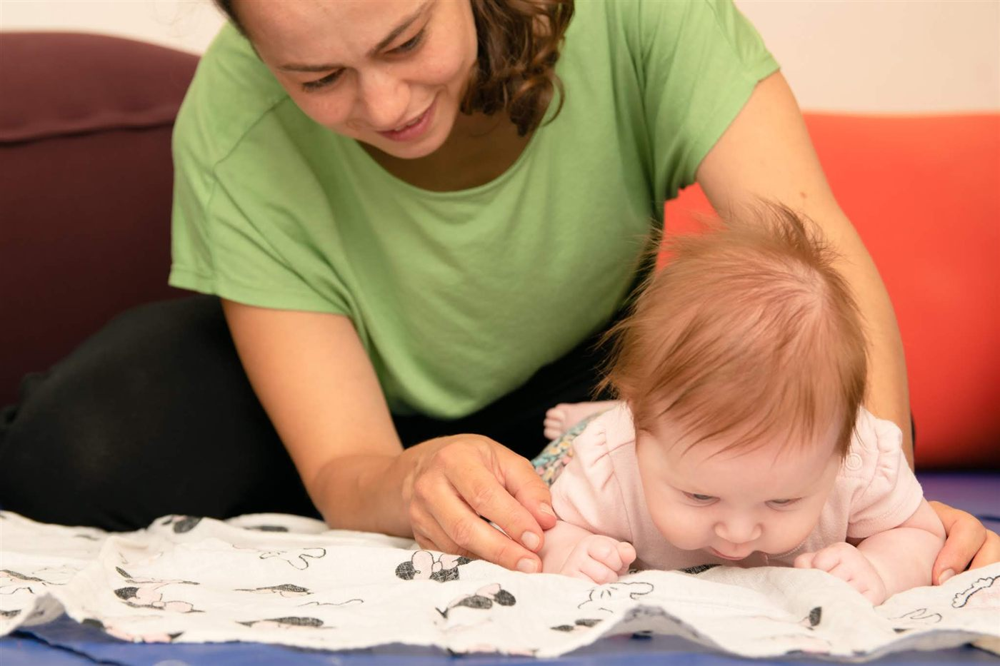
הנדלינג: לא משנה רק מה עושים, אלא איך
בחודשים הראשונים התינוק נמצא הרבה על הידיים: מחתלים, מרימים, מאכילים ומרגיעים. האופן שבו אנחנו מחזיקים ומזיזים אותו נקרא בשפה המקצועית "הנדלינג", והוא יכול לעזור לו להתחזק.
דוגמה: כשמרימים את התינוק, כמה אתם תומכים בראשו? תינוק צעיר זקוק לתמיכה מלאה, אבל לפעמים ממשיכים לתמוך גם כשכבר אין צורך, והתינוק מפספס הזדמנות לחזק את שליטת הראש. שינוי קטן בהרגל יכול לתת לו הרבה מאוד תרגול לאורך היום.
הנדלינג טוב מותאם לקצב ולעוצמה של התינוק: הוא נותן לו ביטחון ומאפשר לו להשתתף.
לקראת זחילה
סביב גיל 5–6 חודשים כדאי לחשוף את התינוק גם לתנוחות על הברכיים. לא צריך ג׳ימבורי: ערימת כריות, חבילת טיטולים או קופסה עם צעצוע מעליה מזמינות אותו למשוך את עצמו ולטפס. הסביבה הביתית יכולה להיות סביבה התפתחותית מצוינת.
אחרי הצעדים הראשונים
בהדרגה הילד ילך יותר וייפול פחות, ילמד לעצור, להתכופף ולחזור לעמידה, וילך גם על משטחים כמו חול ודשא. אם הליכה עצמאית לא הופיעה עד סביבות שנה וחצי, או שהיא נשארת לא יציבה כמה חודשים, מומלץ להתייעץ עם פיזיותרפיסטית התפתחותית.
מתי להתחיל להתכונן לגמילה?
סימנים למוכנות: הילד מודיע כשעשה פיפי או קקי, מביע רצונות בבירור, מגלה עניין בשירותים, יושב לבד על סיר ועוזר בהתלבשות. בשלב טרום הגמילה אפשר לקרוא ספרים על הנושא, לשחק משחקי דמיון עם בובה ולהושיב אותו על הסיר כשהוא רוצה.
מה הקשר בין עצירות להרטבה?
עצירות היא אחת הסיבות השכיחות לקשיים בשליטה על סוגרים, ולפעמים צריך לטפל בה קודם. גם ארוחת בוקר מהירה ויציאה לגן בלי זמן לשבת בשירותים משפיעים. שגרה קבועה של ישיבה בשירותים אחרי הארוחות יכולה לעזור מאוד.
איך להפיק את המיטב מהטיפול?
היו שותפים
גם אם אתם לא בחדר כל הזמן, שוחחו עם המטפלת, ספרו מה קורה בבית ושאלו איך להמשיך את התרגול.
להישאר בחדר?
ברוב המקרים כן! כך תראו את הטכניקות ותוכלו ליישם אותן בבית, והילד ירגיש שאתם שותפים להצלחות שלו.
לדבר בזהירות
ילדים שומעים וסופגים הרבה, גם כשנראה שלא. על חלק מהדברים עדיף לדבר כשהילד לא נוכח.
לחגוג הצלחות קטנות
היו סבלניים ועקביים, ותנו לילד ולעצמכם קרדיט על כל צעד קטן בדרך.
רוצים הדרכה אישית?
אני מעבירה גם הדרכות וסדנאות להורים בקליניקה ואונליין.
בואו נדבר
הדרך הכי מהירה היא וואטסאפ. אפשר גם להשאיר פרטים, ואחזור אליכם בהקדם.